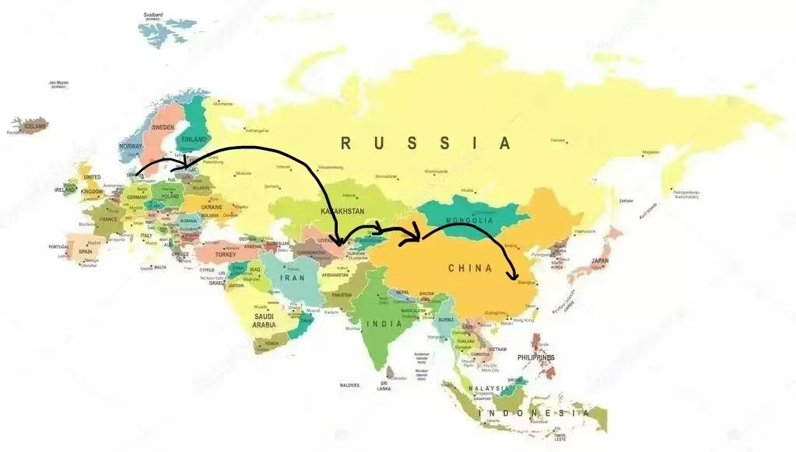
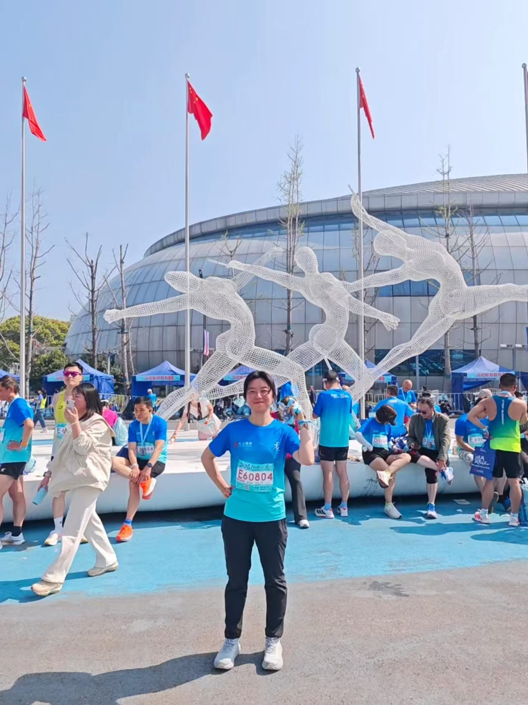
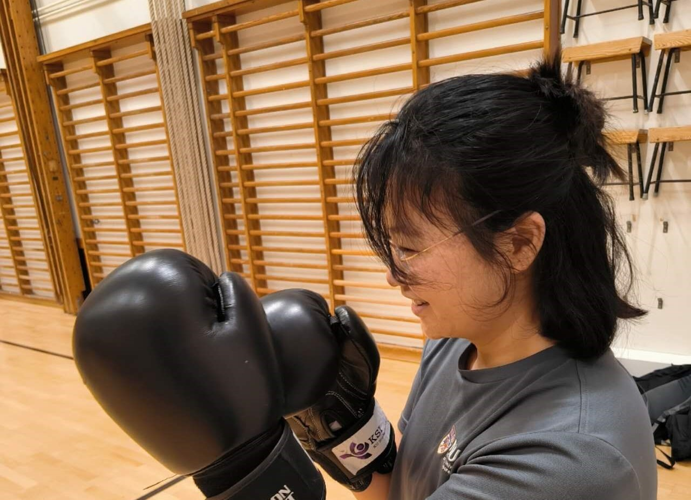
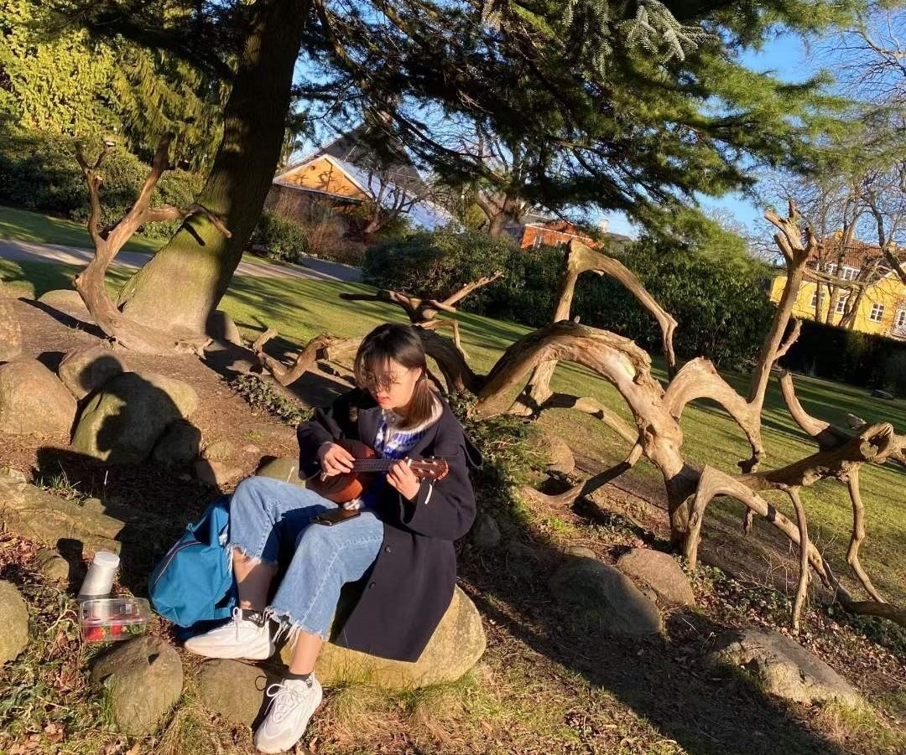

04 / 更多的我
我是一个怎样的人？

01 / 在路上
反向走了一次丝绸之路
我做过最有趣的一件事，是研究生期间选择从欧洲陆路回国。
从丹麦出发，经拉脱维亚进入中亚，穿过乌兹别克斯坦和哈萨克斯坦，再从新疆回到中国，之后一路经过兰州、西安，最后回到合肥。
与其说这是一次旅行，我更喜欢把它理解成一次缓慢地回家。飞机会把两个地方压缩成起点和终点，而陆路让我真正看见了中间发生的一切。
- 丹麦
- 拉脱维亚
- 乌兹别克斯坦
- 哈萨克斯坦
- 新疆
- 兰州
- 西安
- 合肥
02 / 身体在运动
我喜欢正在做一件事的感觉
徒步是我坚持时间最长的运动。相比目的地，我更喜欢长时间行走本身——一步一步经过一个地方，身体会迫使注意力重新回到当下。


03 / 音乐
会一些乐器，但五音不全
小时候学习古筝，大学开始接触古琴，研究生阶段又开始弹尤克里里，乐器断断续续陪伴了我很多年。
我也很喜欢音乐剧和话剧。唯一的问题是——我天生五音不全。
所以相比唱歌，我大概更适合弹琴和坐在台下。
- 古筝
- 古琴
- Ukulele

04 / 写下来
我是过客、是体验者，也是记录的人
我喜欢读书，也一直有写游记和记录感受的习惯。很多时候写东西并不是为了得到一个结论，只是简单地想把它记录下来。
05 / 我相信的事情
人生大概没有全局最优解
我不知道怎样才算把人生过得最好。
很多选择，也许只是当下信息、经验和处境里的一个“局部最优”。所以比起一直寻找一个标准答案，我更希望自己保持好奇，去一些没去过的地方，学一些不会的东西，认真对待喜欢的人和事，也记录那些不会再发生第二次的瞬间。
我们时常会混淆，什么是自己对自己的期待，什么只是别人对我们的期待。
把所有人的认可都当成目标，不是。
遇到冲突就逃避，不是。
因为害怕犯错，就只选择最容易被理解的路，同样不是。
我期待自己享受求知的乐趣，也愿意形成自己的判断；
我还期待把手放在岩石上，把脚踩在泥土里；期待和朋友一起放肆地大笑；期待去陌生的地方，看没有见过的风景；期待认真喜欢一些人、一些事，也让身边的人感受到我很浓的爱意。